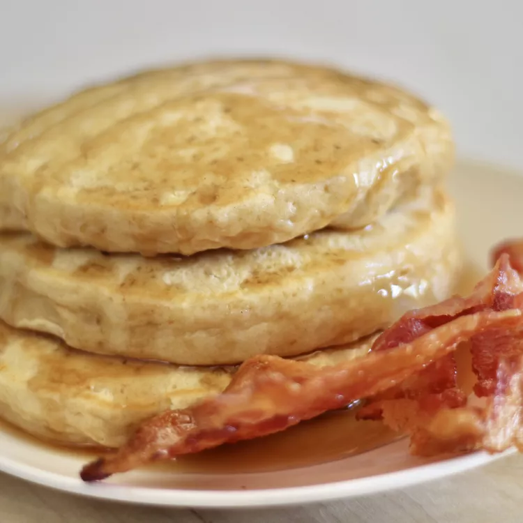

Japanese-Style Fluffy Pancakes

Ingredients
- 2 eggs
- 1/4 cup brown sugar
- 1 1/2 cups all-purpose flour
- 2 teaspoons baking powder
- 2/3 cup milk
- 1/2 teaspoon vanilla extract
Directions:
- Beat eggs and sugar together in a bowl using an electric mixer on medium speed until well blended
- Mix flour and baking powder together in a separate bowl. Slowly mix into the sugar-egg mixture; batter will thicken rather quickly. Slowly add milk. Stir in vanilla extract.
- Heat a lightly oiled griddle over medium-high heat. Drop batter by large spoonfuls onto the griddle and cook until bubbles form and the edges are dry, 3 to 4 minutes. Flip and cook until browned on the other side, 2 to 3 minutes. Repeat with remaining batter.
- Heat a grill pan over high heat and lightly brush with vegetable oil. Add skewers and cook until chicken is no longer pink in the center, basting frequently with 1/2 of the sauce, 7 to 10 minutes per side.
Nutritional Information (per serving)
282 4g 52g 9g
Calories Fat Carbs Protein
Return to main page